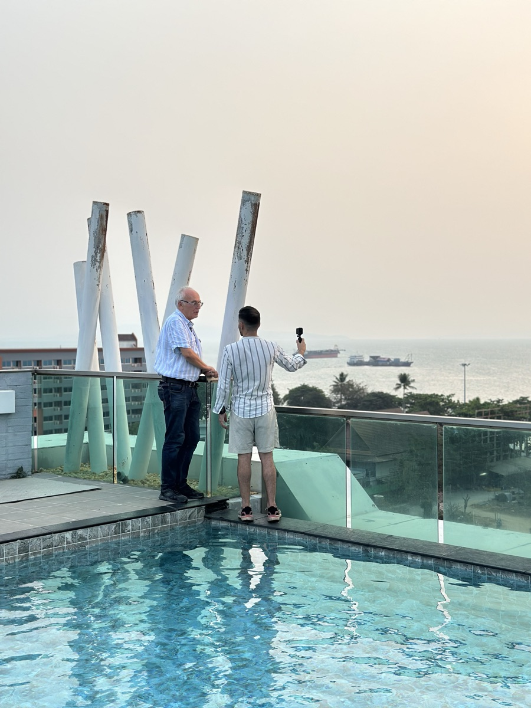

Auf dem Kanal sitze ich Menschen gegenüber, die den Schritt gemacht haben, und frage nach ihrer Monatsbilanz. Hier steht zusammengefasst, was dabei herauskommt: Kosten, Visum, Wohnen, und die Stellen, an denen es in der Praxis kippt.

Ich sage es dir so wie es ist: Die Spanne ist groß, und sie hängt fast komplett von deinen Gewohnheiten ab. Wer lokal isst und einen Roller fährt, landet ganz woanders als jemand, der abends westlich essen geht und ein Auto braucht.
| Posten | Sparsam | Komfortabel |
|---|---|---|
| Wohnen, ein Zimmer | 200 € | 400 € |
| Essen | 80 € | 200 € |
| Transport | 20 € | 60 € |
| SIM und Internet | 10 € | 20 € |
| Krankenversicherung | 40 € | 80 € |
| Freizeit und Ausflüge | 30 € | 150 € |
| Gesamt | 380 € | 910 € |
Der Punkt, den viele übersehen: Die Grundkosten sind klein. Teuer wird das Vergnügen. Bei vielen Auswanderern, die ich getroffen habe, machen die Extras zwei Drittel des Budgets aus.
Die erste Frage ist immer dieselbe: Welches Visum brauche ich? Die Antwort hängt davon ab, wie lange du bleiben willst.
Du brauchst kein Visum. Das nennt sich Visa Exemption, du kommst einfach an. Für einen ersten Probeaufenthalt reicht das völlig, und genau den empfehle ich jedem, bevor er Möbel verkauft.
Das TR Visum Single Entry kostet 2.000 Baht, rund 55 €, und wird online beantragt. Bearbeitung fünf bis sieben Werktage. Vor Ort lässt es sich beim Immigration Office verlängern, in Pattaya für 800 Baht an einem Tag. Damit kommst du auf 90 Tage am Stück.
Wichtig: Es gibt nur eine offizielle Antragsseite. Es gibt sehr viele Seiten, die aussehen wie die offizielle und das Dreifache nehmen.
Seit 2024 Pflicht für alle Einreisenden. Sie ist kostenlos und muss spätestens drei Tage vor Ankunft ausgefüllt sein. Wer es vergisst, kann es am Flughafen nachholen, steht dafür aber in der Schlange.
Mieten zuerst. Das sagen mir fast alle, die schon länger dort sind, und zwar mit derselben Begründung: Du kennst den Ort noch nicht gut genug, um zu wissen, wo du wirklich leben willst. Zwei Straßen weiter kann eine komplett andere Gegend sein.
Ich habe eine Reihe von Wohnungen und Häusern selbst angesehen und gefilmt. Die Spanne, die dabei herauskam, reicht von 162 € für 35 Quadratmeter nahe am Meer bis 550 € für ein Apartment mit Infinity-Pool. Häuser mit drei Schlafzimmern liegen bei 675 € bis 917 €.
Beim Kaufen gilt die wichtigste Regel zuerst: Land kannst du als Ausländer nicht auf deinen Namen kaufen, eine Eigentumswohnung in der Foreign Quota schon. Wer das umgehen will, landet in Konstruktionen, die im Streitfall nicht halten.
Das ist die Stelle, die in Gesprächen am häufigsten unterschätzt wird. Eine Auslandskrankenversicherung für Langzeitaufenthalte liegt je nach Alter und Anbieter bei 40 € bis 80 € im Monat. Mit steigendem Alter und Vorerkrankungen wird es deutlich teurer, und irgendwann nimmt dich niemand mehr neu auf.
Es gibt Auswanderer, die über Jahre in das thailändische System eingezahlt haben und dadurch auf sehr niedrige Beiträge kommen. Einer meiner Gesprächspartner zahlt umgerechnet rund 18 € im Monat mit voller Erstattung der abgedeckten Behandlungen. Das ist aber an seinen persönlichen Status gebunden und kein Weg, den man einfach nachmachen kann. Wer neu kommt, rechnet mit den 40 € bis 80 €.
SIM-Karte am Flughafen oder in der Stadt, Grab statt Taxi, und ein Bankkonto, das im Ausland keine Gebühren frisst. Das klingt banal, aber genau daran hängt, ob sich die ersten Wochen leicht oder zäh anfühlen.
Das hier ist der Kern des Kanals. Keine Ratgeber-Sätze, sondern Menschen mit Namen, Alter und Zahlen. Manche sind seit dreißig Jahren da, andere sind gescheitert und zurückgegangen.
Für eine Person, die überwiegend lokal lebt, sind rund 600 € im Monat realistisch. Sparsam geht es ab etwa 380 €, komfortabel mit häufigem westlichem Essen und mehr Freizeit liegt bei rund 910 €. Der größte Hebel ist nicht die Miete, sondern was du abends machst.
Für Aufenthalte unter 30 Tagen nicht, das läuft über die Visa Exemption. Für längere Phasen gibt es das TR Visum Single Entry für 2.000 Baht, rund 55 €, mit fünf bis sieben Werktagen Bearbeitungszeit. Vor Ort lässt es sich verlängern, in Pattaya für 800 Baht, damit kommst du auf 90 Tage am Stück.
Die Thailand Digital Arrival Card ist seit 2024 für alle Einreisenden Pflicht. Sie kostet nichts und muss spätestens drei Tage vor Ankunft ausgefüllt sein. Wer sie vergessen hat, kann sie am Flughafen nachholen, verliert dabei aber Zeit in der Warteschlange.
Ein Zimmer liegt zwischen 200 € und 400 € im Monat. Mit Pool und Gym wird es ab etwa 300 € realistisch. Aus den Wohnungen, die ich selbst angesehen habe: 162 € für 35 Quadratmeter nahe am Meer, 270 € mit Meerblick, 550 € für ein Apartment mit Infinity-Pool. Häuser mit drei Schlafzimmern liegen bei 675 € bis 917 €.
Eine Eigentumswohnung ja, wenn sie in der sogenannten Foreign Quota liegt. Land kannst du als Ausländer nicht auf deinen eigenen Namen kaufen. Konstruktionen, die das umgehen sollen, halten im Streitfall oft nicht. Wer kaufen will, sollte vorher mindestens eine Saison zur Miete an dem Ort gelebt haben.
Für Neuankömmlinge sind 40 € bis 80 € im Monat realistisch, je nach Alter und Anbieter. Mit steigendem Alter und Vorerkrankungen wird es deutlich teurer. Sehr niedrige Beiträge, von denen man manchmal hört, hängen fast immer an einem persönlichen Status, den jemand über Jahre aufgebaut hat, und lassen sich nicht einfach nachmachen.
Mit einem Probeaufenthalt von vier Wochen an einem Ort, nicht mit einer Rundreise. Danach mit einer ehrlichen Rechnung, in der auch Visum, Krankenversicherung, Heimflüge, Kaution und Wechselkurs stehen. Genau dafür gibt es hier die kostenlose Monatsrechnung.
Die meisten rechnen mit Miete und Essen und vergessen den Rest. Genau daran scheitern Auswanderungen, nicht am Mut. In der Monatsrechnung stehen alle Posten, mit Quellen, plus eine Vorlage für deine eigene Rechnung. Kostenlos.